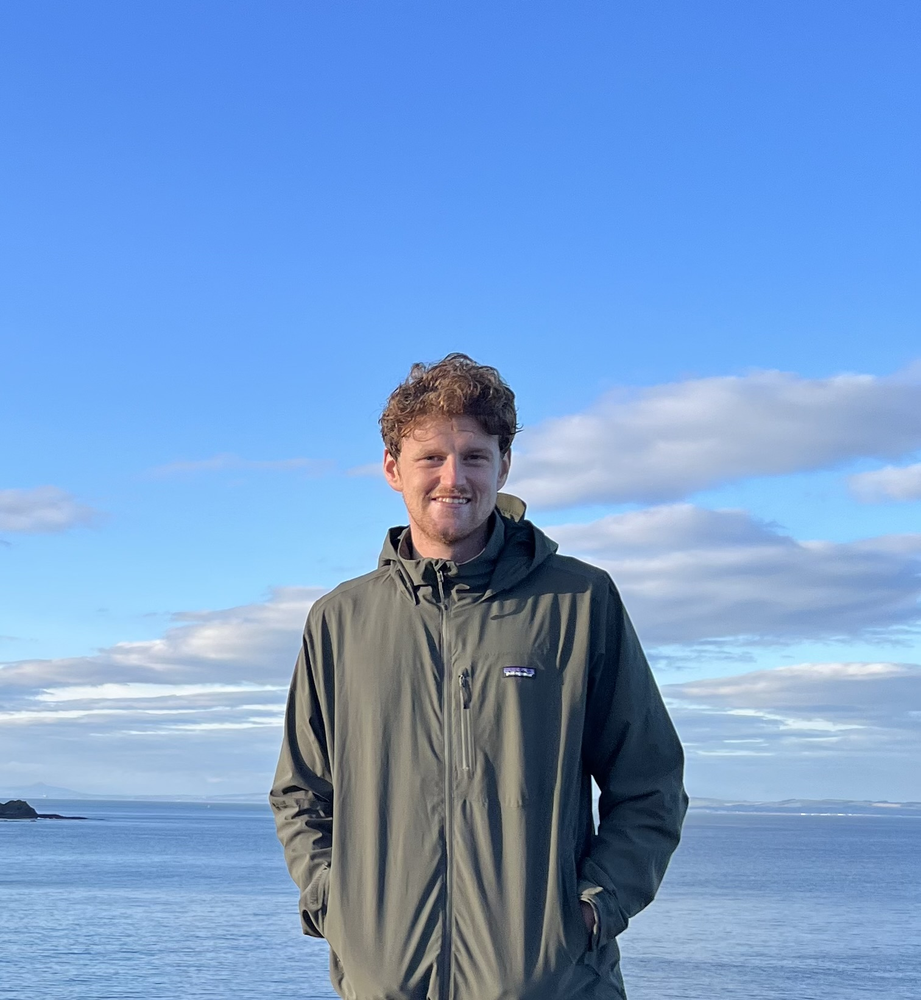

Personal Statement
I am a web developer, looking for my first job in the industry. I am self-taught, on-line, through Codeacademy. My focus is HTML, CSS and Javascript. My background is as an engineering officer, training with and working for BP Maritime Services onboard their oil tankers. My career change reflects my passion for art and creativity. My creative and visionary thinking shines through my designs, enabling me to innovate and problem-solve. Becoming a competent web-developer, demonstrates my motivation, self-drive and ability to work autonomously, under-pinned by my track record of practical, team and personal skills, plus outstanding work ethic. I believe I would be an asset to your team. I look forward to hearing from you.

Development Tools
- HTML
- CSS
- Javascript
- React
- Redux
- Python
- Github
Career History
Dog walker for Wagging Tails NE (2022-present) || Volunteer at The Peoples Kitchen (2022-present) || Surf instructor at KA adventure sports (2021) || 4th Engineer at BP Maritime Services (2016-2020) || Waiter at Crusoes Tynemouth (2015-2016) || Waiter at Castaways Seaton Sluice (2015)